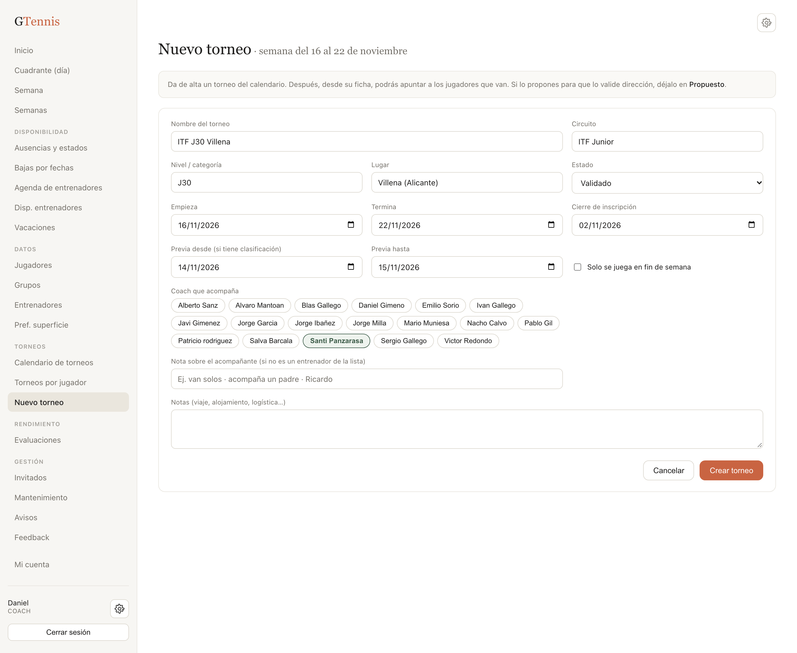
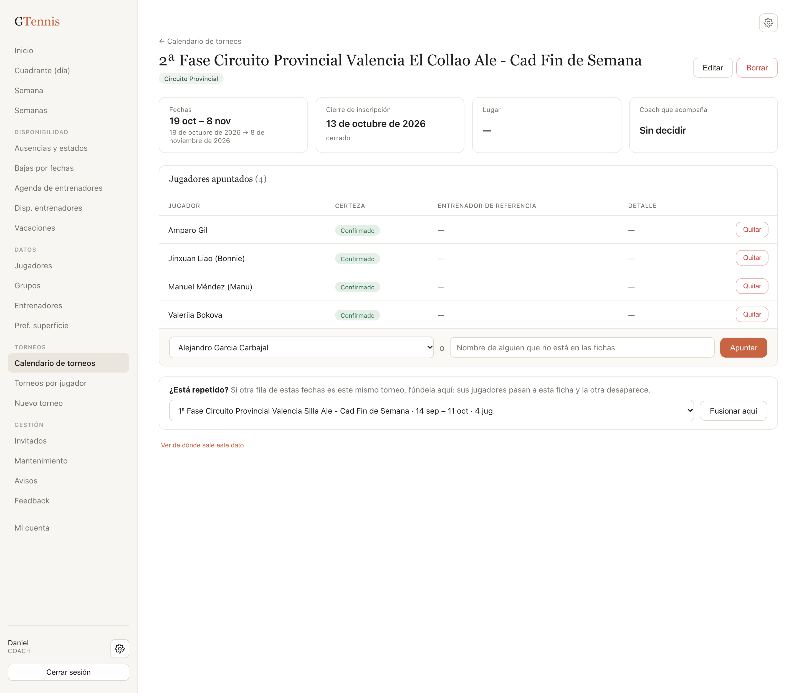
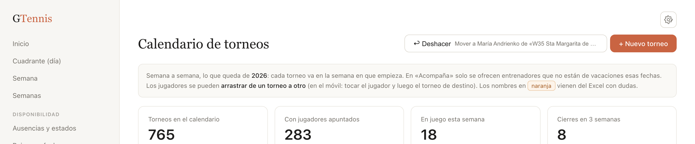

GTennis · Revisar los torneos
Guía rápida para head coaches · octubre de 2026
1. Entra en el calendario
gtennis.vercel.app → menú Torneos → Calendario de torneos. Sale «Desde hoy» por semanas. Un torneo que dura varias semanas, o tiene previa la semana anterior, sale en todas («semana 1 de 3»…). En cada semana van arriba los torneos con jugadores. Los que no tienen a nadie están plegados en «Ver los otros N torneos de la semana sin jugadores».
2. Revisa cada semana
- ¿Tus jugadores están en el torneo correcto? Si no, arrastra su nombre al torneo bueno. En el móvil, toca el jugador y luego el torneo de destino. Para quitar o apuntar a alguien, pulsa el nombre del torneo y hazlo en su ficha.
- Nombres en naranja: el Excel tenía dudas. En la ficha, pulsa Confirmar si es correcto, o Quitar si no lo es.
- ¿Quién acompaña? Elígelo en el desplegable de la columna «Acompaña». Solo salen los entrenadores que no están de vacaciones esas fechas.
- ¿Un torneo no se juega? En su ficha: Editar → estado Cancelado.

3. Añade lo que falte
- Abre antes el desplegable de la semana: puede que el torneo ya esté, sin jugadores. Si está, arrastra a los tuyos a él.
- Si no está, pulsa «+ añadir un torneo esta semana» en la cabecera de la semana.
- Rellena el nombre, el circuito (elige uno de la lista), las fechas del cuadro, la previa si tiene clasificación, el cierre de inscripción, «solo fin de semana» si es un circuito de fines de semana, y quién acompaña. Pulsa Crear torneo.
- En la ficha que se abre, apunta a tus jugadores.

4. Repetidos y errores
Dos filas que son el mismo torneo. Abre la ficha de la buena. Abajo, en «¿Está repetido?», elige la otra y pulsa Fusionar aquí. Sus jugadores pasan a esta.

¿Te has equivocado? Pulsa ↩︎ Deshacer, arriba del calendario o de la ficha. Al lado pone qué se va a deshacer. Puedes pulsarlo varias veces.

Has terminado cuando, en tus semanas…
- Cada torneo al que va alguien de tu grupo está una sola vez, con fechas y cierre de inscripción.
- Tus jugadores están donde van y ninguno sale en naranja.
- Cada torneo con jugadores tiene acompañante, o la nota de que van solos.
Solo puedes mover a jugadores de tu grupo de color. Si uno debería ser tuyo, habla con dirección. Manual completo: «Manual_catalogo_torneos_y_jugadores».